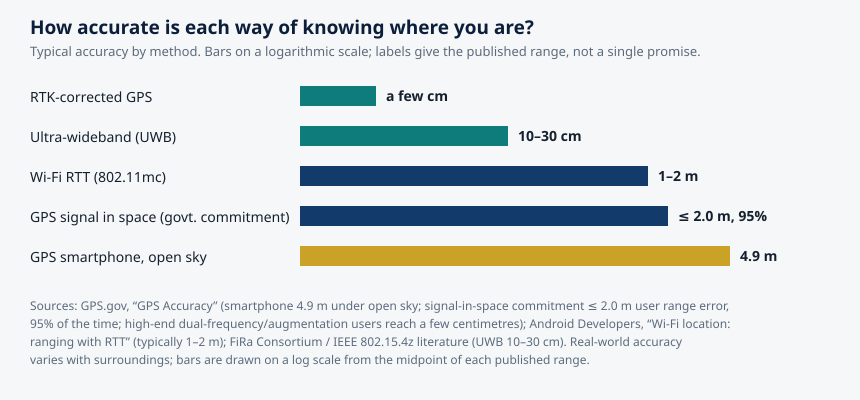

Article 57 · Locator.X · AGI Future Foundation
How Positioning Actually Works: From Satellites to the Room You Are Standing In
This article is about how positioning actually works: the physics, the engineering, and the limits of knowing where something is. The science in it is real, public, and decades old. The Global Positioning System has been operating since the 1990s, its accuracy figures are published by the United States government, and the indoor technologies described here are documented in open standards and vendor documentation.
Chart: typical accuracy by method. Sources: GPS.gov, "GPS Accuracy"; Android Developers, "Wi-Fi location: ranging with RTT"; FiRa Consortium / IEEE 802.15.4z literature. Bars on a logarithmic scale; labels give the published range.
What is true, and what is not yet true
This article is about how positioning actually works: the physics, the engineering, and the limits of knowing where something is. The science in it is real, public, and decades old. The Global Positioning System has been operating since the 1990s, its accuracy figures are published by the United States government, and the indoor technologies described here are documented in open standards and vendor documentation.
Here is what is not yet true. Locator.X has no verified product, service, dataset, or location-data policy, and this article does not invent one. The series is named in the April 2026 internal W3 list with a planned focus on location, finding, and navigation, and its metaverse fabric is anchored at 21.097, 142.693 with its fabric JSON live on GitHub Pages, but the roughly two hundred GLB assets and the map.wasm module it references are not hosted, so the world does not render fully in Artemis yet. Nothing in the science below describes a system the Foundation has built. The science is the reason the series is worth attempting; it is not evidence that the attempt has succeeded. The last section of this article is explicit about what would have to exist before Locator.X could honestly claim to locate anything for anyone.
1. The question underneath the question
"Where am I?" sounds like one question. In practice it is at least four, and each one has a different answer, a different accuracy, and a different cost.
The first is the outdoor question: where on the surface of the Earth is this device, to within a few metres? That is the question GPS answers, and it is the one most people mean when they say "location".
The second is the indoor question: where inside a building is this device, to within a room, a corridor, or a shelf? GPS mostly cannot answer it, because satellite signals are too weak to pass through roofs and walls with usable strength. The indoor question needs different technology entirely.
The third is the relative question: how far is this device from that device, and in which direction? That is the question behind finding lost keys and unlocking a car as you approach it. It is answered by short-range radio, not by satellites.
The fourth is the boundary question: has this device entered, or left, a defined area? That is geofencing, and it is less a measurement than a tripwire: a line drawn on a map, and an alert when a device crosses it.
A location series that confuses these four questions will build the wrong thing. A satellite system will not find your keys in a warehouse. An indoor system will not navigate a ship across an ocean. A geofence will not tell you where someone is, only whether they are inside a line you drew.
2. GPS: it is a clock, not a map
The Global Positioning System is owned by the United States government and operated by the United States Space Force. It is, at its core, a timekeeping system that happens to produce positions as a side effect. Understanding that single fact explains almost everything about how GPS behaves, including why it fails where it fails.
Each GPS satellite carries atomic clocks, accurate to within billionths of a second, and broadcasts two things continuously: its own precise orbital position and the exact time the signal was sent. A receiver on the ground listens to those broadcasts and measures how long each signal took to arrive. Because radio signals travel at the speed of light, about 299,792,458 metres per second, the travel time converts directly into a distance: distance equals speed multiplied by time.
One distance puts the receiver somewhere on a giant sphere centred on the satellite. A second distance narrows the possibilities to a circle where two spheres intersect. A third narrows them to two points, one of which is far out in space and can be ignored. This is called trilateration: triangulation measures angles, while trilateration measures distances. The name matters because the entire system is built on measuring time, not on measuring direction.
A fourth satellite is needed, and the reason is the clock in your pocket. Your phone does not contain an atomic clock. Its quartz clock is good enough for everyday use and hopelessly imprecise for measuring light-speed travel times: a timing error of one millionth of a second translates into a position error of roughly 300 metres. The fourth satellite's signal lets the receiver solve for its own clock error as a fourth unknown, alongside latitude, longitude, and altitude. That is why GPS needs at least four satellites in view to produce a three-dimensional fix. In practice a receiver in open sky usually sees seven to twelve satellites, which gives it redundancy and better accuracy.
The satellites orbit about 20,200 kilometres above the Earth, in medium Earth orbit, circling the planet twice a day. The system is designed around a minimum of 24 working satellites, distributed across six orbital planes so that at least four are visible from any point on Earth at any time. The constellation has grown past that minimum: GPS.gov's published count in July 2023 was 31 operational satellites, and later reporting put the active constellation at 32 after the final GPS III satellite launched in April 2026.
There is a famous wrinkle in the timekeeping. The satellites move fast, about 8,700 miles per hour, and they sit far above the Earth's gravity well. Both facts change how their clocks run relative to clocks on the ground, and the two effects do not cancel: the net result is that each satellite clock runs roughly 38 microseconds per day faster than an identical clock on the ground. Left uncorrected, that drift would put positions wrong by about ten kilometres within a day. The system corrects for it continuously. GPS is, in that sense, the largest working demonstration of Einstein's theories ever built, and a reminder that positioning is a measurement of time first and a measurement of place second.
The satellites themselves do not track anything on the ground. They are beacons, like lighthouses, broadcasting one-way reference signals. GPS.gov states this directly in its frequently asked questions: the government operators of GPS cannot locate your phone or device, because the satellites only transmit. Your phone works out where it is; nobody in orbit works it out for you. That distinction will matter in the next article, about privacy, because the tracking people worry about happens on the ground, in phones and servers, not in space.
How accurate is it, really?
GPS.gov answers the accuracy question with a characteristic piece of honesty: it depends. The government commits to broadcasting the GPS signal in space with a daily global average user range error of no more than 2.0 metres, with 95 percent probability, and on April 20, 2021 the measured global average was no more than 0.643 metres, 95 percent of the time. But that commitment covers the signal in space, not your device. What you receive depends on satellite geometry, signal blockage, atmospheric conditions, and the quality of your receiver. For a phone, GPS.gov gives the figure most people should remember: GPS-enabled smartphones are typically accurate to within a 4.9 metre radius under open sky, and their accuracy worsens near buildings, bridges, and trees.
Higher accuracy is available. Dual-frequency receivers, using both the L1 and L5 signals, cancel out much of the delay the ionosphere adds to the signal, improving accuracy to roughly one to two metres. Real-time kinematic positioning, which compares the receiver's measurements against a nearby ground reference station whose position is known exactly, achieves centimetre-level accuracy. Surveyors, precision farmers, and construction crews use these techniques every day. Your phone does not, because it would need a second frequency it may not have, a correction feed it does not subscribe to, and an antenna far larger than the one that fits in a handset.
There is also a piece of history that explains why civilian GPS is as good as it is. Until May 2000, the United States deliberately degraded the civilian signal through a feature called Selective Availability, limiting civilian accuracy to roughly 100 metres. When President Clinton ordered it switched off, civilian accuracy improved overnight to roughly 20 metres, and has improved since. It is a reminder that GPS is a government service provided free to the entire world, and that its performance is a policy decision as well as a technical fact.
3. GPS is not the only constellation
The United States system is the oldest and best known, but it is no longer the only one. Russia operates GLONASS, the European Union operates Galileo, and China operates BeiDou. Modern phones listen to several of these systems at once, which is one of the quiet reasons your blue dot has become more reliable: more satellites in view means better geometry, faster fixes, and more resilience when a building blocks part of the sky.
The systems are designed to be compatible in the ways that matter. The GPS III satellites' new L1C civilian signal is meant to work alongside Galileo's signals, so a receiver can use both constellations together without special handling.
It is also a dependency worth naming. Every satellite navigation system in the world is operated by a government, and every one of them is a military asset first and a civilian utility second. A location service built on GPS is built on infrastructure its builders do not control. For most purposes that is an acceptable risk: the signal is free, global, and extraordinarily reliable. But a series that plans to offer location as a service should know where its ground truth comes from.
4. Why your phone is better than GPS alone
If you have ever watched your blue dot snap to the right street within seconds of opening a map, you have seen something GPS alone cannot do. A cold GPS receiver can take a minute or more to download the satellite data it needs and compute its first fix. Your phone does it in seconds because it cheats, in several ways, and each cheat is a different positioning technology layered on top of the satellites.
The first cheat is assisted GPS. Your phone gets the satellites' orbital data over the mobile network or Wi-Fi instead of waiting to download it from the satellites themselves, which is slow. It also gets a rough position from the cell towers it is connected to, which narrows the search. The result is a fix in seconds rather than minutes, and a fix in places where the satellite signal alone would be too weak to start from.
The second cheat is Wi-Fi positioning. Your phone knows the locations of nearby Wi-Fi access points, because devices have been mapping them for years, and it measures the signal strength of each one. In a dense city there are usually enough access points in range to place the phone within a few tens of metres, even indoors where satellites cannot reach. This is why your blue dot works in a shopping mall or an office building: it is not GPS working through the roof, it is Wi-Fi working through the walls.
The third cheat is the sensors in the phone itself. Accelerometers, gyroscopes, magnetometers, and barometers let the phone estimate how far it has moved, in which direction, and whether it has gone up or down a floor, since its last reliable fix. This is called dead reckoning, and it is how a map keeps tracking you through a tunnel or a car park where the satellite signal drops out. It drifts over time, because every small measurement error accumulates, but over short distances it is remarkably effective.
The fourth cheat is the map itself. Modern navigation systems snap your position to the nearest road, because the road is where you almost certainly are. This is called map matching, and it makes the blue dot look more accurate than the raw measurement actually is.
None of this is a criticism. The layered approach is why positioning feels effortless. But it means the "GPS" in your phone is really a fusion of five or six measurements, each with its own error, each with its own source, and each with its own privacy implication. A location series that treats the blue dot as a single measurement from a single source will misunderstand both its accuracy and its risks.
5. Indoors: where the satellites cannot see
Step inside a building and the satellite signal falls apart. The signals are weak to begin with, by the time they have travelled 20,200 kilometres, and roofs, walls, and metal structures attenuate them further. What gets through is often too weak, too reflected, or too delayed to be useful, and the error grows from metres to tens of metres, which is the difference between knowing which building you are in and knowing which room. That is why indoor positioning is a separate field with its own technologies and its own trade-offs.
The oldest indoor approach is the Bluetooth beacon. A small battery-powered beacon broadcasts an identifier, and a phone that hears it knows it is near that beacon. The position is approximate, a room or a zone rather than a point, and the accuracy is a few metres at best. Beacons are cheap and easy to install, and good enough for telling a visitor which gallery they are standing in. They are not good enough for guiding a robot down a corridor, because they cannot resolve position finely enough and because signal strength, which is what they measure, is affected by bodies, shelves, and anything else between the beacon and the phone.
Wi-Fi positioning indoors works the same way it works outdoors, by measuring signal strength against a map of known access points, but it can be made more precise with a technique called Wi-Fi RTT, or round-trip time. Instead of measuring how strong a signal is, which varies with obstacles, Wi-Fi RTT measures how long a packet takes to travel to an access point and back, and multiplies that time by the speed of light. It is the same principle as GPS, applied at a range of metres rather than thousands of kilometres. The technique is specified in the IEEE 802.11-2016 standard as Fine Timing Measurement, and the Android Developers documentation states that measuring the distance to three or more access points and applying multilateration typically gives a position accurate within one to two metres. It requires access points that support the standard, and a phone that supports it, which is why it is common in new buildings and rare in old ones.
Ultra-wideband, or UWB, is the most precise of the indoor technologies in common use. UWB sends very short pulses across a very wide band of radio spectrum, from 3.1 to 10.6 GHz, with channel bandwidths of 500 MHz or more. The wide bandwidth is the source of its precision: a 500 MHz signal can resolve time differences of about two nanoseconds, which translates to roughly 30 centimetres of spatial resolution per measurement. In practice, UWB positioning systems achieve 10 to 30 centimetres of accuracy, and in a well-controlled industrial test reported in a 2023 Institute of Navigation paper, UWB achieved a mean absolute error of 3.7 centimetres, against 4.5 metres for Wi-Fi positioning in the same environment.
That precision is why UWB is in your pocket already, whether you know it or not. Apple's U1 chip, in iPhones since the iPhone 11, is what makes Precision Finding for AirTags work: the phone does not just tell you the tag is nearby, it points an arrow at it and tells you how many feet away it is. Samsung's Galaxy phones and Google's Pixel phones have UWB too. The FiRa Consortium, founded in 2019 by companies including Apple, Google, Samsung, NXP, and Qorvo, exists to make UWB interoperable across brands, building on the IEEE 802.15.4z standard, which adds secure ranging to the older UWB standard.
UWB has limits. Its range is short, typically 10 to 50 metres in open air and often 10 to 20 metres indoors, because walls, metal, and human bodies attenuate the signal. It needs anchors, fixed reference points installed in the space, and the number of anchors needed grows with the size of the space. And it is a technology for knowing where things are relative to each other, not for knowing where they are on the Earth: a UWB system can tell you a tag is 2.4 metres to your left, but it cannot tell you its latitude and longitude unless someone has first surveyed the anchors into a geographic frame. That last point is the bridge between the indoor and outdoor worlds, and it is where a location series would have to do real work: tying a precise local frame to a global one, and keeping the tie honest as buildings change.
6. Geofencing: drawing a line and waiting
Geofencing is not a positioning technology. It is a use of positioning: a virtual boundary drawn on a map, and a rule that fires when a device crosses it. The boundary can be a circle around a point, a polygon around a building or a neighbourhood, or a corridor along a road. The rule can be an alert, a message, a log entry, or the start of some other process. The technology underneath can be GPS, Wi-Fi, Bluetooth, or any combination of them, and the choice determines how accurately the boundary is enforced.
Geofencing also raises the question that the next article takes up in full: who drew the line, who knows when it is crossed, and what happens to that knowledge. A geofence around a shop that sends you a coupon is a small thing. A geofence around a clinic, a place of worship, or a protest, that records who entered and when, is a different thing entirely, even if the technology is identical.
7. What goes wrong
Positioning fails in patterns, and the patterns are worth learning, because a system that does not expect them will mislead its users at the worst moments.
The most common failure is multipath. In a city, a satellite signal can bounce off a glass building before reaching the receiver, arriving later than the direct signal would have, and therefore looking as if it came from further away. The receiver, which assumes every signal travelled in a straight line, computes a position that is wrong, sometimes by tens of metres. This is the urban canyon effect: the blue dot jumps across the street, or onto a parallel road, or into a building you are standing next to.
The second failure is blockage. Tunnels, car parks, deep valleys, and the interiors of large buildings all reduce the number of satellites in view. With fewer than four satellites, there is no three-dimensional fix at all, and the receiver falls back on its last known position, on Wi-Fi, or on dead reckoning. The map may keep showing you moving, or it may freeze. Either way, the position on screen is a guess, and the system should say so.
The third failure is interference. GPS signals are extremely weak by the time they reach the ground, which makes them easy to overwhelm with a stronger local signal. Jamming, the broadcasting of noise on the GPS frequencies, denies positioning to everyone in range. Spoofing, the broadcasting of false GPS signals, is worse: it gives receivers a wrong position that looks confident and consistent. Both are illegal in most jurisdictions, and both happen, including in conflict zones and around sensitive facilities. A location system that treats a GPS fix as ground truth, with no cross-check against Wi-Fi, inertial sensors, or a map, will accept a spoofed position without complaint.
The fourth failure is the map itself. GPS.gov is explicit that the United States government cannot correct mapping errors in consumer devices. A position can be exactly right and the map can be exactly wrong: a road that has moved, a building that has been demolished, a place that was never surveyed properly. The blue dot is only as useful as the map it sits on.
The fifth failure is the simplest: the device was wrong about what it was measuring. A phone in a pocket, a tag in a bag, a receiver under a metal roof, each of these changes the signal in ways the system cannot see. The honest statement of a position is not a point but a circle, with a radius that says how uncertain the measurement is.

| Method | Typical accuracy | Where it works | What it needs |
|---|---|---|---|
| RTK-corrected GPS | A few centimetres | Outdoors, near a reference station | Dual-frequency receiver, correction feed |
| Ultra-wideband | 10–30 cm | Indoors, short range | UWB anchors, UWB device |
| Wi-Fi RTT (802.11mc) | 1–2 m | Indoors, near capable access points | FTM-capable access points and phone |
| GPS signal in space | 2.0 m or better, 95% | Global, outdoors | Government commitment, not device accuracy |
| GPS smartphone, open sky | 4.9 m | Outdoors | Clear view of at least 4 satellites |
| Bluetooth beacons | A few metres | Indoors, near a beacon | Installed beacons |
Table: the methods in this article, side by side. Accuracy figures are the published typical values cited in the text.
8. What Locator.X would have to decide
All of this is public science. None of it is Locator.X. The series, as it stands in the Foundation's records, is a name and a number in an internal list, a planned focus on location, finding, and navigation, and an anchored metaverse fabric at 21.097, 142.693 whose definition is published but whose assets are not yet hosted. The Foundation's own site article on the series, Locator.X: Knowing Where Things Are, says the same thing in more detail, including the fact that the series has no verified partner, user, publication, location-data policy, or Steward Council. The repository for the series, Locator.X on GitHub, records real-estate predictive tooling, a 92-lesson Academy, and 85 modules. None of that is a location service.
If the series is ever built, the science in this article sets its first decisions, and they are decisions a human Steward Council would have to make in writing before any collection began.
The first decision is which question the series answers, and to what accuracy. Navigation, mapping, search, indoor positioning, and geofencing are different products with different accuracy requirements and different privacy consequences. A promise of "accurate location" means nothing; a promise of "within 5 metres outdoors, within 2 metres indoors, measured against surveyed ground truth, with the error published" means something, and it can be tested. The figures in this article give the series a menu: 4.9 metres from a phone under open sky, 1 to 2 metres from Wi-Fi RTT, 10 to 30 centimetres from UWB. Each figure comes with a cost, in anchors, infrastructure, power, and complexity.
The second decision is the frame. A coordinate is only meaningful inside a reference system, and the systems differ. GPS uses WGS 84, the world geodetic system, as its frame. A building's UWB anchors use a local frame, defined by where the anchors were installed. A virtual world's coordinates, like the 21.097, 142.693 anchor of the Locator.X fabric, use a frame defined by the world itself. Tying those frames together, so that a position in one means something in the others, is a surveying job, not a software job, and it has to be redone whenever the physical world changes.
The third decision is the failure policy. What does the system do when it cannot get a fix, when the fix is uncertain, when two sources disagree, or when the map and the measurement conflict? The honest answer is to show the uncertainty, to say "we do not know" when the system does not know, and to keep a record of when it was wrong. A location service's failure policy is its character, and it should be written down before the service launches, not invented after the first bad fix.
The fourth decision is the one the next article is about, and it is the most important of all: what the series collects, from whom, with what consent, and for how long. The science in this article explains how location is measured. It does not answer whether it should be collected, and by whom, and under what rules. That question is not technical. It needs a written policy, a named human accountable for it, and a way for a person to say no and to have that no respected. Locator.X has none of those things today, and the honest thing is to say so, plainly, until it does.
Glossary
Trilateration: Determining a position by measuring distances to known reference points, as GPS does with satellites. Not triangulation, which measures angles.
User range error (URE): The error in the distance measured to a satellite. The United States government commits to a daily global average URE of 2.0 metres or better, 95 percent of the time.
Dead reckoning: Estimating position from sensors, accelerometers, gyroscopes, barometers, by tracking movement since the last reliable fix. It drifts over time.
Wi-Fi RTT: Round-trip-time ranging, specified in IEEE 802.11-2016 as Fine Timing Measurement, measuring distance to access points by timing packets. Typically accurate to 1–2 metres.
Ultra-wideband (UWB): Short-range radio using very wide bandwidth pulses, achieving 10–30 cm positioning accuracy. Standardised in IEEE 802.15.4 and 802.15.4z; interoperable through the FiRa Consortium.
Geofence: A virtual boundary drawn on a map, with a rule that fires when a device enters or leaves it.
Multipath: A signal reaching a receiver by more than one path, usually after reflecting off a building, arriving late and corrupting the distance measurement. The main cause of urban GPS error.
Frequently asked questions
No, not by itself. GPS satellites only broadcast; they do not receive. Your phone works out where it is. Tracking happens when an app, a carrier, or a service records that position and sends it somewhere, which is a decision made on the ground, not in orbit.
It is not using GPS. It is using Wi-Fi positioning, Bluetooth beacons, or the sensors in the phone, and it is often less accurate than it looks.
Sources
- GPS.gov, "GPS Accuracy" — smartphone accuracy of 4.9 m under open sky; signal-in-space commitment of 2.0 m user range error, 95 percent of the time; measured global average 0.643 m on 20 April 2021; high-end users reaching a few centimetres.
- GPS.gov, "GPS.gov: Frequently Asked Questions" — satellites do not track anything on the ground; constellation count of 25 operational satellites as of 3 July 2023.
- GPS.gov, "Civilian Benefits of Discontinuing Selective Availability" — Selective Availability switched off May 2000; civilian accuracy improved from 100 m to about 20 m.
- AGI Future Foundation, Locator.X: Knowing Where Things Are — the Foundation site article on W3 Series 8: planned focus, anchored fabric at 21.097, 142.693, fabric JSON live, assets not hosted, no verified partner, user, publication, location-data policy, or Steward Council.
- Locator.X repository — 92-lesson Academy, 85 modules, 50-state guides.
- FiRa Consortium / EE World Online, "UWB: A reborn standard for high-accuracy location services" — UWB 10 cm accuracy indoors, 3.1–10.6 GHz, IEEE 802.15.4 and FiRa Consortium, Apple U1 chip.
- Elsanhoury et al., "Emerging Wireless Technologies for Reliable Indoor Navigation in Industrial Environments," ION GNSS+ 2023 — UWB mean absolute error 3.7 cm against Wi-Fi 4.5 m in a dense industrial test environment.
- Android Developers, "Wi-Fi location: ranging with RTT" — Wi-Fi RTT (IEEE 802.11-2016 Fine Timing Measurement) typically accurate within 1–2 metres; introduced in Android 9. (Documentation page; URL not reproduced here because it was not returned in a verified search result.)
- Foundation filing documents reviewed 2026-11-03 — AGI Future Foundation, California Nonprofit Public Benefit Corporation, Entity No. B20260196664, Articles filed 2026-04-24; no IRS 501(c)(3) determination letter on file; W3 LLC formation and per-series designation not verified in filings.
Goals served: foundation-funding (a credible, honest technical article is the kind of public work that supports the Foundation's fundraising case); smartciti-learners (positioning is core knowledge for the SmartCiti.X learner platform's trades and robotics training); corporate-safe (the article keeps filed fact and intended plan visibly apart, as the corporate paperwork requires).